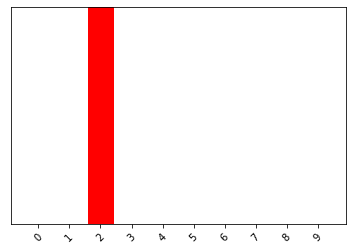

Following a tutorial to learn about classification¶
https://www.pyimagesearch.com/2020/08/24/ocr-handwriting-recognition-with-opencv-keras-and-tensorflow/
https://www.pyimagesearch.com/2020/08/17/ocr-with-keras-tensorflow-and-deep-learning/
# TensorFlow and tf.keras
import tensorflow as tf
from tensorflow import keras
from tensorflow.keras.datasets import mnist
# Helper libraries
import numpy as np
import matplotlib.pyplot as plt
print(tf.__version__)
---------------------------------------------------------------------------
ModuleNotFoundError Traceback (most recent call last)
<ipython-input-1-222b9a9d3278> in <module>
1 # TensorFlow and tf.keras
----> 2 import tensorflow as tf
3 from tensorflow import keras
4 from tensorflow.keras.datasets import mnist
5
ModuleNotFoundError: No module named 'tensorflow'
Loading the minst data¶
((train_data, train_labels), (test_data, test_labels)) = mnist.load_data()
num_data = np.vstack([train_data, test_data])
num_labels = np.hstack([train_labels, test_labels])
train_data.shape
(60000, 28, 28)
len(train_labels)
60000
train_labels
array([5, 0, 4, ..., 5, 6, 8], dtype=uint8)
test_data.shape
(10000, 28, 28)
Preprocessing¶
plt.figure()
plt.imshow(train_data[0])
plt.colorbar()
plt.grid(False)
plt.show()

train_labels[0]
5
train_images = train_data / 255.0
test_images = test_data / 255.0
plt.figure(figsize=(10,10))
for i in range(25):
plt.subplot(5,5,i+1)
plt.xticks([])
plt.yticks([])
plt.grid(False)
plt.imshow(train_images[i], cmap=plt.cm.binary)
plt.xlabel(train_labels[i])
plt.show()

model = keras.Sequential([
keras.layers.Flatten(input_shape=(28, 28)),
keras.layers.Dense(128, activation='relu'),
keras.layers.Dense(10)
])
model.compile(optimizer='adam',
loss=tf.keras.losses.SparseCategoricalCrossentropy(from_logits=True),
metrics=['accuracy'])
model.fit(train_images, train_labels, epochs=10)
Epoch 1/10
1875/1875 [==============================] - 5s 2ms/step - loss: 0.2610 - accuracy: 0.9246
Epoch 2/10
1875/1875 [==============================] - 4s 2ms/step - loss: 0.1170 - accuracy: 0.9654
Epoch 3/10
1875/1875 [==============================] - 5s 2ms/step - loss: 0.0800 - accuracy: 0.9757
Epoch 4/10
1875/1875 [==============================] - 5s 3ms/step - loss: 0.0599 - accuracy: 0.9814
Epoch 5/10
1875/1875 [==============================] - 4s 2ms/step - loss: 0.0465 - accuracy: 0.9859
Epoch 6/10
1875/1875 [==============================] - 4s 2ms/step - loss: 0.0364 - accuracy: 0.9882
Epoch 7/10
1875/1875 [==============================] - 4s 2ms/step - loss: 0.0301 - accuracy: 0.9906
Epoch 8/10
1875/1875 [==============================] - 5s 2ms/step - loss: 0.0232 - accuracy: 0.9930
Epoch 9/10
1875/1875 [==============================] - 5s 2ms/step - loss: 0.0207 - accuracy: 0.9936
Epoch 10/10
1875/1875 [==============================] - 5s 2ms/step - loss: 0.0165 - accuracy: 0.9950
<tensorflow.python.keras.callbacks.History at 0x7ff41c8faeb8>
test_loss, test_acc = model.evaluate(test_images, test_labels, verbose=2)
print('\nTest accuracy:', test_acc)
313/313 - 0s - loss: 0.0879 - accuracy: 0.9771
Test accuracy: 0.9771000146865845
model.save("/content/drive/My Drive/OCR_Models/test", save_format="h5")
model.summary()
Model: "sequential_6"
_________________________________________________________________
Layer (type) Output Shape Param #
=================================================================
flatten_3 (Flatten) (None, 784) 0
_________________________________________________________________
dense_6 (Dense) (None, 128) 100480
_________________________________________________________________
dense_7 (Dense) (None, 10) 1290
=================================================================
Total params: 101,770
Trainable params: 101,770
Non-trainable params: 0
_________________________________________________________________
probability_model = tf.keras.Sequential([model,
tf.keras.layers.Softmax()])
predictions = probability_model.predict(test_images)
predictions[0]
array([5.1176685e-09, 2.1366794e-10, 2.3774007e-09, 1.0789295e-04,
1.4307129e-12, 3.2132934e-09, 4.5453668e-15, 9.9989104e-01,
7.8374027e-09, 1.0980250e-06], dtype=float32)
np.argmax(predictions[0])
7
test_labels[0]
7
def plot_image(i, predictions_array, true_label, img):
true_label, img = true_label[i], img[i]
plt.grid(False)
plt.xticks([])
plt.yticks([])
plt.imshow(img, cmap=plt.cm.binary)
predicted_label = np.argmax(predictions_array)
if predicted_label == true_label:
color = 'blue'
else:
color = 'red'
plt.xlabel("{} {:2.0f}% ({})".format(predicted_label,
100*np.max(predictions_array),
true_label),
color=color)
def plot_value_array(i, predictions_array, true_label):
true_label = true_label[i]
plt.grid(False)
plt.xticks(range(10))
plt.yticks([])
thisplot = plt.bar(range(10), predictions_array, color="#777777")
plt.ylim([0, 1])
predicted_label = np.argmax(predictions_array)
thisplot[predicted_label].set_color('red')
thisplot[true_label].set_color('blue')
i = 0
plt.figure(figsize=(6,3))
plt.subplot(1,2,1)
plot_image(i, predictions[i], test_labels, test_images)
plt.subplot(1,2,2)
plot_value_array(i, predictions[i], test_labels)
plt.show()
i = 12
plt.figure(figsize=(6,3))
plt.subplot(1,2,1)
plot_image(i, predictions[i], test_labels, test_images)
plt.subplot(1,2,2)
plot_value_array(i, predictions[i], test_labels)
plt.show()
# Plot the first X test images, their predicted labels, and the true labels.
# Color correct predictions in blue and incorrect predictions in red.
num_rows = 5
num_cols = 3
num_images = num_rows*num_cols
plt.figure(figsize=(2*2*num_cols, 2*num_rows))
for i in range(num_images):
plt.subplot(num_rows, 2*num_cols, 2*i+1)
plot_image(i, predictions[i], test_labels, test_images)
plt.subplot(num_rows, 2*num_cols, 2*i+2)
plot_value_array(i, predictions[i], test_labels)
plt.tight_layout()
plt.show()
# Grab an image from the test dataset.
img = test_images[1]
print(img.shape)
(28, 28)
# Add the image to a batch where it's the only member.
img = (np.expand_dims(img,0))
print(img.shape)
(1, 28, 28)
predictions_single = probability_model.predict(img)
print(predictions_single)
[[5.9285649e-13 2.2908682e-07 9.9999976e-01 6.1066660e-12 5.7151947e-25
1.5804970e-10 8.4905329e-12 2.3482077e-16 5.6444176e-11 9.9121417e-18]]
plot_value_array(1, predictions_single[0], [0,1,2,3,4,5,6,7,8,9])
_ = plt.xticks(range(10), [0,1,2,3,4,5,6,7,8,9], rotation=45) #The labels are wrong

np.argmax(predictions_single[0])
2
Testing it on my own images¶
from IPython.display import display, Javascript
from google.colab.output import eval_js
from base64 import b64decode
def take_photo(filename='photo.jpg', quality=0.8):
js = Javascript('''
async function takePhoto(quality) {
const div = document.createElement('div');
const capture = document.createElement('button');
capture.textContent = 'Capture';
div.appendChild(capture);
const video = document.createElement('video');
video.style.display = 'block';
const stream = await navigator.mediaDevices.getUserMedia({video: true});
document.body.appendChild(div);
div.appendChild(video);
video.srcObject = stream;
await video.play();
// Resize the output to fit the video element.
google.colab.output.setIframeHeight(document.documentElement.scrollHeight, true);
// Wait for Capture to be clicked.
await new Promise((resolve) => capture.onclick = resolve);
const canvas = document.createElement('canvas');
canvas.width = video.videoWidth;
canvas.height = video.videoHeight;
canvas.getContext('2d').drawImage(video, 0, 0);
stream.getVideoTracks()[0].stop();
div.remove();
return canvas.toDataURL('image/jpeg', quality);
}
''')
display(js)
data = eval_js('takePhoto({})'.format(quality))
binary = b64decode(data.split(',')[1])
with open(filename, 'wb') as f:
f.write(binary)
return filename
from IPython.display import Image
try:
filename = take_photo()
print('Saved to {}'.format(filename))
# Show the image which was just taken.
display(Image(filename))
except Exception as err:
# Errors will be thrown if the user does not have a webcam or if they do not
# grant the page permission to access it.
print(str(err))
Saved to photo.jpg
import numpy as np
import imutils
import cv2
from google.colab.patches import cv2_imshow
from matplotlib import pyplot as plt
image = cv2.imread("photo.jpg")
resized_image = cv2.resize(image, (28, 28))
gray = cv2.cvtColor(resized_image, cv2.COLOR_RGB2GRAY)
# blurred = cv2.GaussianBlur(gray, (5, 5), 0)
(thresh, blackAndWhiteImage) = cv2.threshold(gray, 80, 255, cv2.THRESH_BINARY)
imagem = cv2.bitwise_not(blackAndWhiteImage)
cv2_imshow(imagem)
imagem.shape
(28, 28)
img2 = (np.expand_dims(imagem,0))
print(img2.shape)
(1, 28, 28)
plt.figure()
plt.imshow(imagem)
plt.colorbar()
plt.grid(False)
plt.show()
predictions_array = probability_model.predict(img2)
print(predictions_array)
[[1. 0. 0. 0. 0. 0. 0. 0. 0. 0.]]
predicted_label = np.argmax(predictions_array)
predicted_label
0
plot_value_array(1, predictions_array[0], [0,1,2,3,4,5,6,7,8,9])
_ = plt.xticks(range(10), [0,1,2,3,4,5,6,7,8,9], rotation=45) #The labels are wrong